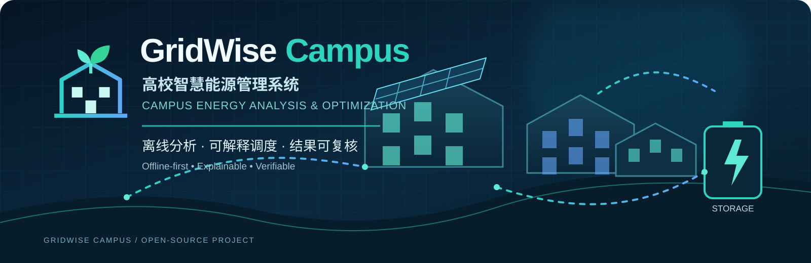

⚡
多时段调度优化
使用 Pyomo 建模，通过 HiGHS 求解器处理光伏、电网购电与电池储能的调度问题。

面向高校场景的离线能源分析与优化原型，围绕负荷、光伏、电网购电和电池储能，探索可解释、可复核的多时段调度。
GridWise Campus is an offline energy-analysis and optimization prototype for campus scenarios, focused on explainable dispatch and verifiable results.
以当前代码实现为边界，不把规划中的能力包装成已交付功能。
使用 Pyomo 建模，通过 HiGHS 求解器处理光伏、电网购电与电池储能的调度问题。
支持纯电费优化、显式峰值上限策略，以及同输入无储能基线比较。
对 JSON/CSV 输入、单位、时间间隔、缺失值与时间完整性进行检查。
通过独立审计、运行清单与哈希校验，验证结果文件后再安全读取。
基于 Tkinter/ttk 的本机界面，支持数据检查、运行对比、历史记录与图表。
导出 JSON、CSV、SVG 与自包含 HTML 报告，便于本地检查和复核。
输入、求解、审计与展示分层处理。
当前支持 Windows 11 / Windows Server 与 Python 3.12+。
git clone https://github.com/2257005148-jpg/GridWise-Campus.git cd GridWise-Campus python -m venv .venv & .\.venv\Scripts\python.exe -m pip install -e .
& .\.venv\Scripts\python.exe -m gridwise.desktop # 或运行合成数据示例 & .\.venv\Scripts\python.exe -m gridwise.cli examples\synthetic-day.json outputs\sample
更完整的安装、测试与使用说明请阅读仓库 README。示例数据为合成数据；运行命令不会连接学校系统。
设计契约、数据格式和运行行为的详细说明。